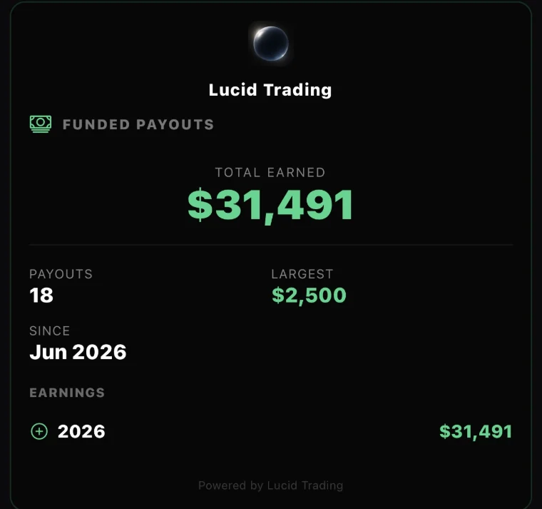

Mes payouts

18 payouts reçus sur mes comptes funded Lucid Trading depuis juin 2026, pour un total de 31 491 $. Le plus gros : 2 500 $.
Appuie sur la capture pour la voir en grand.
Passe funded toi aussi
sur ton challenge FTMO
Passe par mon lien et ton challenge te coûte 20 % moins cher. J’ai moi-même validé les deux étapes du challenge FTMO.
Profiter des –20 %
Lien affilié. Un challenge est payant et peut être perdu.
Clippe mes lives
Je partage les rushs de mes lives sur mon serveur Discord Clipping FxNojah. Tu en fais des clips, tu les postes, et tu es payé selon tes vues.
- Rejoins le serveur, c’est gratuit.
- Fais vérifier ton compte en ouvrant un ticket.
- Déclare chaque clip dans les 48 h qui suivent sa publication.